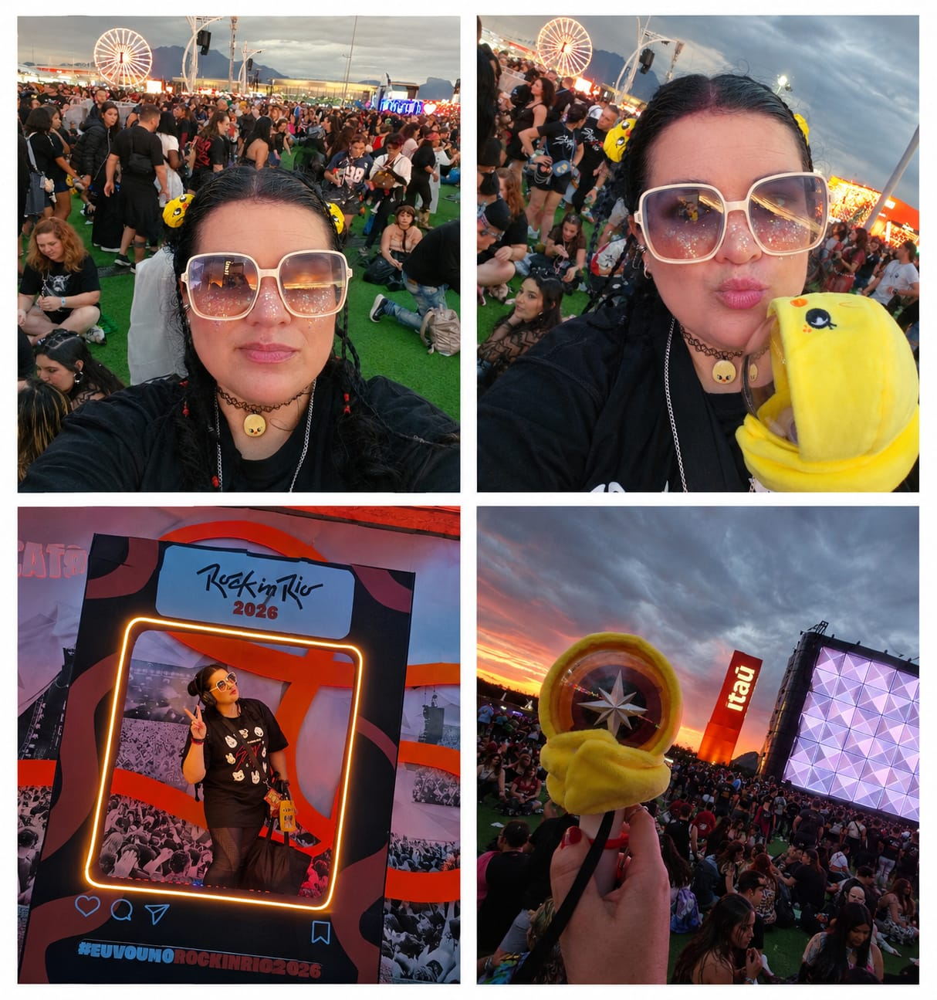

O Gramado, o Salompas e o Stray Kids

Depois de 18 anos, eu retornei a um festival.
Quando fui ao Lupa-Luna, eu tinha por volta dos 20 anos. Fui com uma amiga e lembro que foi uma experiência e tanto. Choveu, os tênis ficaram um nojo, claro, risos.
Mas também lembro de coisas muito boas. Lulu Santos, Charlie Brown Jr. e NX Zero eram alguns dos meus favoritos naquela época. O show do Charlie Brown, principalmente, tinha uma atmosfera muito especial.
Agora, 18 anos depois, eu estava me preparando para viver aquilo de novo.
Só que aos 39 anos a preparação é um pouco diferente.
A gente entope a sola do pé de Salompas, usa meia de compressão para ajudar na circulação, leva analgésico, comida, capa de chuva, energético em gel e, principalmente, aprende a sentar no chão em qualquer lugar. Risos.
Eu e minhas amigas optamos por fazer um bate e volta. Para completar, elas ainda enfrentaram voo cancelado em cima da hora e aquele gasto inesperado para conseguir viver a experiência. Guerreiras, com um bom saldo no cartão, risos.
Ficou a lição: na próxima, melhor chegar na cidade pelo menos um dia antes.
Chegando ao festival
Eu não tive problemas com o voo e uma das coisas que mais me chamou atenção foi perceber os olhares das pessoas.
Eu já estava praticamente toda no look de festival.
E isso ainda é complexo para mim.
Não estou acostumada a receber tantos olhares de julgamento. Então, estar ali, vestida como eu queria, ocupando aquele espaço e simplesmente vivendo a experiência também fazia parte do desafio.
Chegamos por volta das 16h. Pegamos praticamente zero fila, tiramos algumas fotos no letreiro e, meu Deus, quanta gente.
Estava tudo lotado.
Passamos no locker para guardar as tralhas e fomos para o palco principal, porque os meninos do NEXZ já estavam se apresentando.
E zero surpresa: mais um grupo de K-pop para a coleção.
Minha saga de conhecer e amar grupos depois de ver ao vivo continua firme e forte, risos.
Mesmo quando eles não são o centro do festival, são sempre muito bem-vindos.
Entre a muvuca e os meus limites
Depois disso veio o aperto básico da galera que foi chegando.
Nós escolhemos ficar mais para a lateral esquerda do palco.
Veio a Hwasa e eu amei a apresentação dela. Foi muito bom.
Mas já passava das 19h e, para quem tinha acordado às 5h da manhã para fazer cabelo e dormido umas três horas, eu já estava chegando no meu limite.
Então saímos daquele lugar.
E foi ótimo.
Descansamos, tomamos Coca-Cola e deitamos no chão, risos.
Depois veio o Alok. E, cara, ele arrasou na setlist. Pretendo repetir quando puder, risos.
Mais tarde, escolhemos esperar o show do Stray Kids mais próximo de uma das laterais, onde tínhamos um pouco mais de espaço.
Claro que, em vários momentos, foi insalubre. Tinha gente circulando o tempo todo.
Mas conseguimos esperar sentadas durante boa parte do tempo.
Até que, em determinado momento, levei um empurrão gratuito de uma menina que surtou porque eu não dei passagem automaticamente no primeiro pedido.
Ela simplesmente me empurrou.
Eu, super tranquila, soltei:
“Mas é uma cavala mesmo.”
Risos.
Todo mundo em volta se indignou e ela saiu batendo os pés, parecendo o Godzilla daqueles filmes antigos.
Ser fã também é uma questão de limite
Minha trajetória como fã tem uma história que explica bastante da pessoa que eu sou hoje.
Meu primeiro grande show como “tiete” foi Sandy & Junior.
Eu tinha 14 anos.
Fui de salto alto, cheguei às 6 da manhã para pegar fila e, obviamente, não ouvia minha mãe.
Zero juízo.
Em resumo:
vuco-vuco → passar mal → me separar da amiga → assistir ao show pelo telão junto com o resto das 50 mil pessoas.
Então, eu já conheço essa história de querer ficar perto.
Conheço muito bem.
Por isso, para esse festival, fiz um combinado comigo mesma:
eu não iria ultrapassar meus limites.
E foi exatamente o que fiz.
- Fui confortável.
- Levei meus aparatos.
- Fone.
- Capa de chuva.
- Comida.
- Energético em gel.
Escolhi ficar em lugares onde conseguia respirar e descansar.
Não fiquei tentando chegar cada vez mais perto da grade.
E não passei mal.
Uma das meninas que estava com a gente também precisou ficar mais afastada e respeitou os próprios limites.
E sim, está tudo bem ficar mais longe da muvuca para conseguir se regular e não passar mal.
Aliás, talvez isso seja uma das coisas mais importantes que eu aprendi nesse festival:
você não precisa provar que é fã se colocando em sofrimento.
A paixão é intensa. Mas a gente também precisa se cuidar.
Eu tenho a impressão de que quem organiza grandes shows nem sempre entende o tamanho do envolvimento que existe em alguns fandoms.
K-poper é emocionado.
É engajado.
É muita gente.
E esse público cresceu muito nos últimos anos.
A quantidade de eventos, grupos, restaurantes, produtos e experiências ligados à cultura coreana aumentou bastante.
E quando você coloca uma multidão de fãs apaixonados no mesmo lugar, a intensidade aparece.
Às vezes de um jeito muito bonito.
Às vezes de um jeito preocupante.
Empurra-empurra, gente tentando chegar cada vez mais perto, pessoas que passam horas sem sair do lugar para não perder a posição.
A paixão pode fazer a gente esquecer algumas coisas básicas.
Inclusive o próprio corpo.
E eu acho que é justamente aí que essa história começa a ficar interessante para mim.
Porque durante muito tempo eu também achei que estar perto era parte da experiência.
Talvez até uma prova de quanto eu gostava.
Hoje eu penso diferente.
Eu ainda quero estar perto.
Ainda fico emocionada.
Ainda quero ver meus grupos.
Ainda tenho meus surtos de fã, obviamente, risos.
Mas eu também quero voltar para casa bem.
E foi aí que aconteceu o meu festival
No final do show, nós nos encontramos e fomos para o transfer.
Sim, transfer do aeroporto para a Cidade do Rock e depois de volta, às 3 da manhã.
Porque nada de maiores perrengues.
Somos jovens de 30+ e precisamos trabalhar com planejamento, risos.
Para mim, isso também faz parte da experiência.
Não é só escolher o show.
- É pensar em como chegar.
- Onde descansar.
- O que levar.
- Como voltar.
- Com quem estar.
- Até onde ir.
- E, principalmente, quando parar.
Talvez essa seja uma das maiores diferenças entre aquela menina de 14 anos que chegou às 6 da manhã de salto alto e a mulher de 39 que voltou para um festival depois de 18 anos.
Eu continuo querendo viver a experiência.
Só não preciso mais me abandonar para isso.
E talvez seja justamente isso que existe Além da Grade.